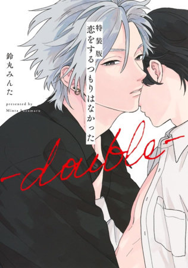

＜—Back
I Didn’t Mean to Fall in Love -double-
Author: Minta Suzumaru
Company: Seven Seas
Official Site

Yoshino and Rou’s love story continues in the sequel story to the hit Boys’ Love manga, I Didn’t Mean to Fall in Love!
Rou and Yoshino have spent their days blissfully in love and by each other’s side at every moment. But now that Rou has graduated university, it’s time to become a proper working adult! Which means his time with Yoshino is decreasing and making Rou frustrated. Between this and learning to work with his new colleagues, Rou may not be up for the task of the working world—especially if it puts his relationship at risk!
Releases Jun. 2025!